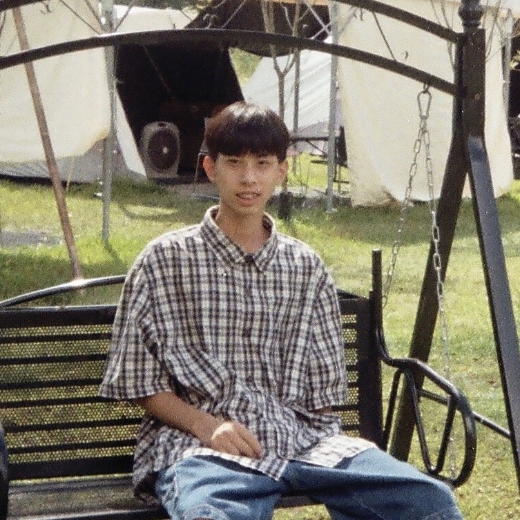
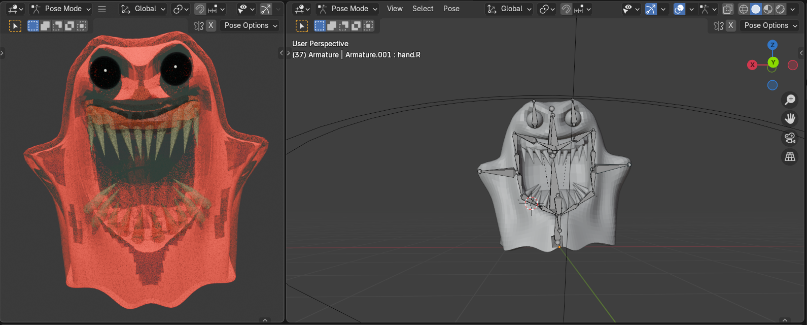
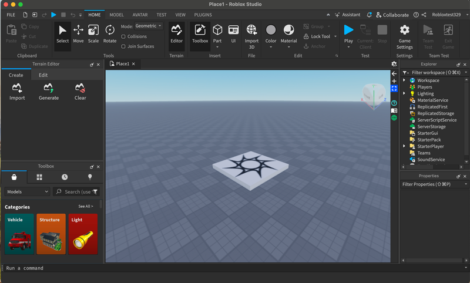
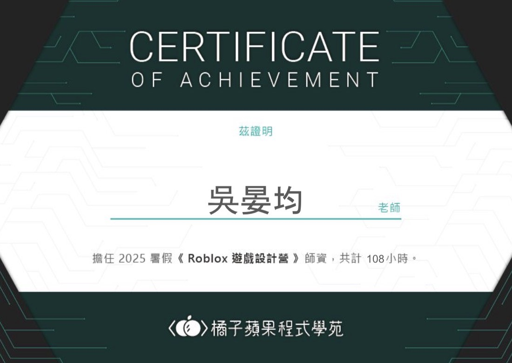

自我介紹
我是吳晏均，目前大學三年級，主修數位學習科技學系。本科系主要培養學生在「教育」與科技兩大領域的跨領域能力。目前正運用所學於「程式設計老師」的工作中，協助學生理解邏輯概念、尋找/除錯問題，強化學生的學習動機與成果 。在累積豐富教學技巧的同時，也培養了清晰的溝通、領導能力。我的個性溫和、樂於與人合作具備良好的團隊精神與溝通能力。在高中、大學擔任吉他社與多項班級幹部，累積豐富的活動企劃與執行經驗，也善於觀察與 理解他人情緒，能夠快速融入團隊並建立信任關係。
我的經歷
工作經歷方面，我目前任職的程式設計老師需要協助Scrach、Python、JavaScript、HTML/CSS、網路與資料庫、演算法、AI人工智慧的學生，暑假也有教學國小4~6年級的Roblox Studio營隊。擅長引導學生偵錯，
有耐心的陪伴學生一起處理問題。同時也具備了美感與空間感，受聘於學校的教務處教學組製作課程宣傳海報和維護後台，也有使用blender製作過動畫的經驗。目前致
力於在職場中學習，對於版面編排與網頁設計很感興趣！
我重視學習與反思，樂於接觸新事物，期待未來能持續拓展跨領域的專業能力，並與團隊一同創造價值。
近期展示
跨足 3D 設計、遊戲開發與程式教育的探索旅程
3D Art

Blender 遊戲角色設計
探索光影與建模的數位藝術創作
Frontend
React 企業實習
多國語言系統開發

Game Dev

Roblox Studio 專案
營隊教學使用的自製遊戲關卡
Education

教學認證
聯絡我
有任何合作機會，歡迎填寫表單，我會盡快回覆您！